В цьому проекті ви дізнаєтеся, як створити гру-платформер, в якій потрібно буде дістатися кінця рівня ухиляючись від рухомих куль.
Крок 1: Рух персонажа
Почнімо зі створення персонажа, який зможе рухатись ліворуч й праворуч, а також підніматися вгору по стовпах.
Завдання для виконання
Спочатку своримо бекграунд для нашої гри. Переконайтеся, що стовпи та платформи будуть різних кольорів, і що в кінці шляху будуть двері (або щось подібне).
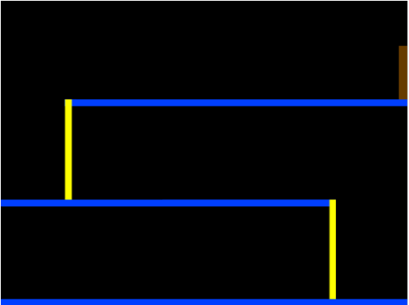
screenshot
Додайте новий спрайт, який буде вашим персонажем. Буде краще, якщо ви виберете спрайт з декількома костюмами, з яких можна зробити анімацію ходіння.
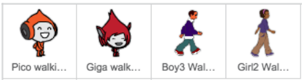
screenshot
Використовуваймо клавіші зі стрілками для руху персонажа. Коли ми натискаємо стрілку праворуч, ми хочемо, щоб персонаж повертався праворуч, робив декілька кроків і змінював костюм:
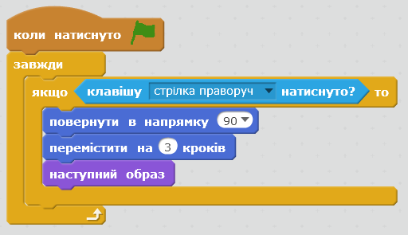
screenshot
Тепер самостійно допиши код, щоб персонаж вмів рухатись і ліворуч. Підказка: потрібно додати до цього коду ще один якщо.
Якщо персонаж перевертається догори ногами, зміни йому тип обертання:
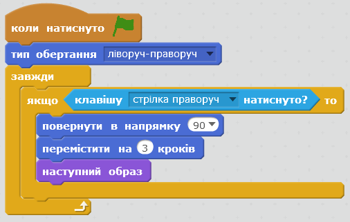
screenshot
Щоб персонаж піднімався по стовпах, використаємо клавішу "стрілка вгору".
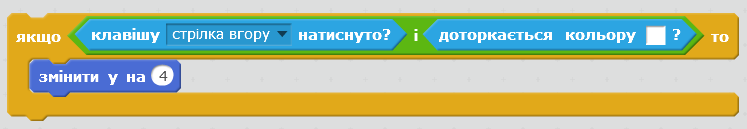
screenshot
Збережіть свій проект
Виклик: Завершення рівня
Ви зможете дописати код, так щоб персонаж щось говорив, якщо доходить до дверей?
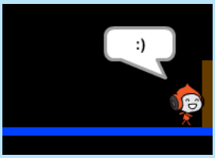screenshot
Крок 2: Гравітація і стрибки
Зробімо рух нашого персонажа більш реалістичним, додавши гравітацію та навчивши його стрибати.
Завдання для виконання
Ви уже, мабуть, помітили, що ваш персонаж може ходити за межами платформ, тобто по повітрю.
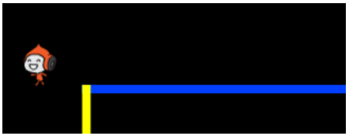screenshot
Щоб виправити це, додайте нову змінну "гравітація".
Додайте цей код до персонажа:
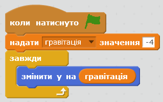
screenshot
Гравітація не повинна рухати персонажа крізь платформи:
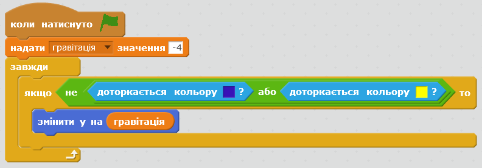
screenshot
Навчімо його стрибати:
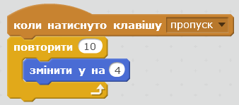
screenshot
Замість числа "4" вкажіть те, яке вам здається найбільш підходящим.
Але якщо затиснути клавішу, він може дострибнути дууууже високо. Тому встановімо обмеження висоті стрибка. Для цього створіть нову змінну "висота стрибка". Та змініть код, який відповідав за стрибки:
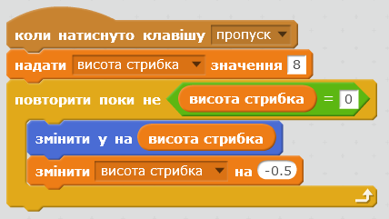
screenshot
Збережіть свій проект
Крок 3: Уникнення куль
Тепер, коли у вас є персонаж, що вміє рухатись, додаймо кілька м'ячів, які він буде уникати.
Завдання для виконання
Створіть новий спрайт м'яча. Ви можете вибрати будь-який м'яч, який вам сподобається.
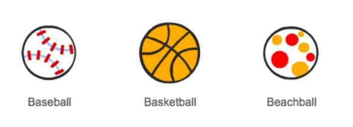
screenshot
Змініть розмір м'яча, так щоб персонаж міг через нього перестрибнути.
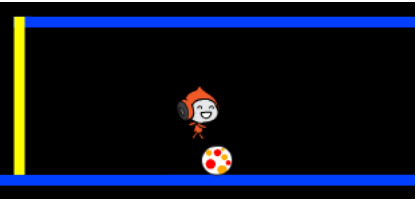
screenshot
Додайте цей код до вашого м'яча:
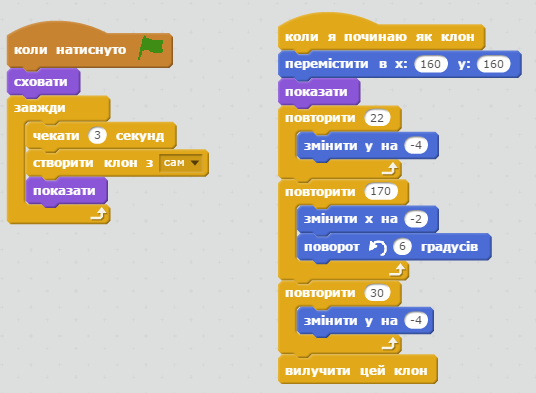
screenshot
Цей код створює кожні три секунди новий клон м'яча. Кожен новий клон рухається уздовж верхньої платформи.
Натисніть на прапорець, щоб перевірити це.
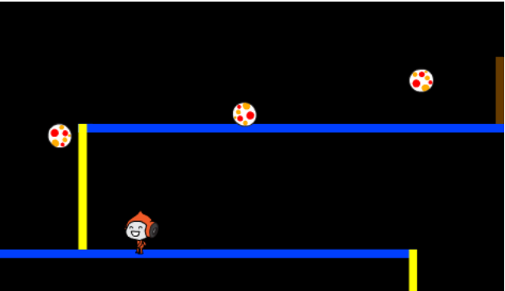
screenshot
Допишіть код вашого м'яча, так щоб вони переміщалися через усі три платформи.
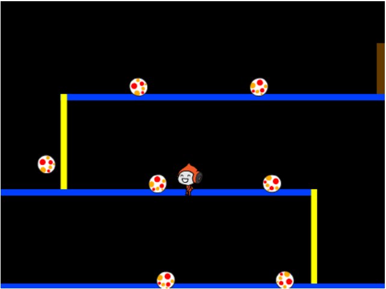
screenshot
І, нарешті, вам знадобиться код для випадку, коли персонаж стикається з м'ячем. Додайте цей код до спрайту м'яча:
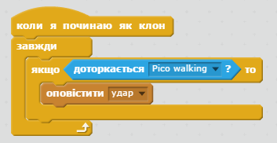
screenshot
Також потрібно додати код до персонажа для його повернення на початок гри після зіткнення:
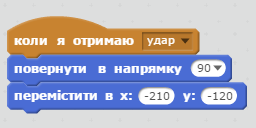
screenshot
Перевірте свого персонажа і подивіться, чи він повертається на початок, коли вдаряється з м'ячем.
Збережіть свій проект
Виклик: Випадкові кулі
Усі м'ячі, які персонаж має уникати, виглядають однаково і завжди з'являються кожні три секунди. Чи можете ви вдосконалити їх, так щоб вони:
не виглядали однаково?
з'являлися після випадкового проміжку часу?
були випадкового розміру?
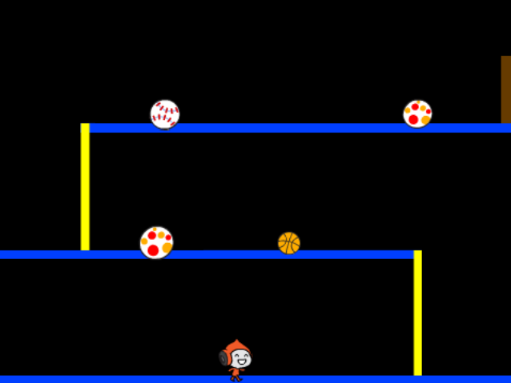screenshot
Збережіть свій проект
Крок 4: Лазери!
Завдання для виконання
Додайте новий спрайт до вашої гри, і назвіть його "Лазер". Він повинен містити два образи: "вимкнений" та "ввімкнений".
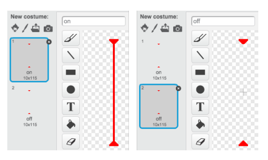
screenshot
Розмісти лазер будь-де між двома платформами.
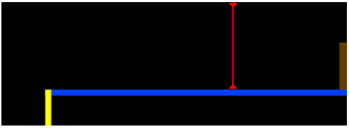
screenshot
Додай код для лазера, щоб він змінювався між двома образами.
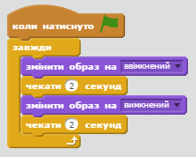
screenshot
(Можеш самостійно обрати кількість секунд між змінами образів.)
І нарешті, додай код для лазера, щоб коли персонаж дотикається до нього гра починалась з самого початку. Цей код буде такий як і при зіткненні з м'ячем.
Протестуй свою гру, щоб перевірити чи можна пройти через лазер. Якщо це було дуже легко, або навпаки важко, можеш змінити час очікування між змінами образів.